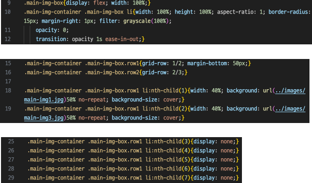
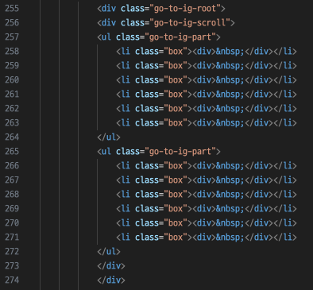
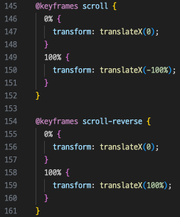

MARSHALL
RENEWAL DESIGN
프로젝트 목표: 브랜드 정체성을 반영해 UI를 구현, 심플하면서도 생동감있는 레이아웃을 통해 브랜드의 이미지 강화
기대 효과: 반응형 웹사이트 제작에 필요한 기술적 숙련도를 높이고, 다양한 디바이스에 대응하는 레이아웃 설계 경험을 얻고자 함
Marshall Website
한국 홈페이지의 경우 메인페이지에서
정보를 찾기 어렵고 정적이며 단조로움
정적임
동적 요소 없음
시각적 요소 부족
정보 부족
AS-IS
Renewal Direction
브랜드의 아이덴티티를 시각적으로 강조
쉬운 접근성과 효율적인 인터페이스 제공
동적 요소
시각적 효과
정보 제공
반응형 웹페이지
효율적인 인터페이스
TO-BE
Style Guide
01. DESIGN KEYWORDS
- UNIQUE
- DYNAMIC
- YOUTH
- #유니크함
- #역동적임
- #젊음
02. COLOR PALETTE
블랙 & 화이트를 기본 컬러로 사용하여 브랜드의 고급스러운 이미지를 반영 하였으며,
움직이는 배경 요소의 경우 그라디언트 색상을 사용하여 부드러운 포인트 컬러로 활용하였습니다.
Unique
#000000
Youth
#FFBC958D
Dynamic
#FFFFFF
03. TYPOGRAPHY
메인 폰트는 한/영 Pretendard를 사용하였으며, Pattaya 체를 사용해 로고체와 통일성을 의도하였습니다.


Publishing Problem & Solution
PC 에서 달라지는 오브젝트 비율
PC 에서 달라지는 오브젝트 비율
Ploblem
Ploblem
첫 메인 화면에서 스크롤시 이미지가 메인 이미지 레이아웃 구조에서 모바일과 달리 PC 화면의 경우, 이미지 중간 이미지와 같은 크기의 공백이 존재함
위치값을 강제로 조정하는 것이 아닌, 사이즈 조절시 이미지들이 동일하게 줄어들어야 함
위치값을 강제로 조정하는 것이 아닌, 사이즈 조절시 이미지들이 동일하게 줄어들어야 함
Solution
Solution
HTML 요소를 삽입하고, Flex, Grid를 활용하여 전체 레이아웃을 조정하였으며,
미디어 쿼리 분기점에서 display:none/block을 활용하여 디바이스별 이미지 구조화를 다르게 함
미디어 쿼리 분기점에서 display:none/block을 활용하여 디바이스별 이미지 구조화를 다르게 함

슬라이드 부분이 왜 버벅거릴까?
슬라이드 부분이 왜 버벅거릴까?
Ploblem
Ploblem
codepen을 활용해 Infinite Autoplay를 구현하려고 하였으나, 마지막 3개 요소만 복제하여,
슬라이드의 맨 앞에 추가하는 형식으로 슬라이드 요소가 많아질 수록 비효율적인 코드가 구성됨
슬라이드의 맨 앞에 추가하는 형식으로 슬라이드 요소가 많아질 수록 비효율적인 코드가 구성됨
Solution
Solution
슬라이드의 마지막 몇 개만 복제하는 대신, 슬라이드 전체를 복제하여 부드럽고 자연스러운
무한 슬라이드 효과를 구현하였으며, 애니메이션 이름을 조건에 따라 동적으로 설정하여 각 파트에 값을 따로 주어 슬라이드가 서로 반대 방향으로 자연스럽게 움직일 수 있도록 했습니다.
무한 슬라이드 효과를 구현하였으며, 애니메이션 이름을 조건에 따라 동적으로 설정하여 각 파트에 값을 따로 주어 슬라이드가 서로 반대 방향으로 자연스럽게 움직일 수 있도록 했습니다.

